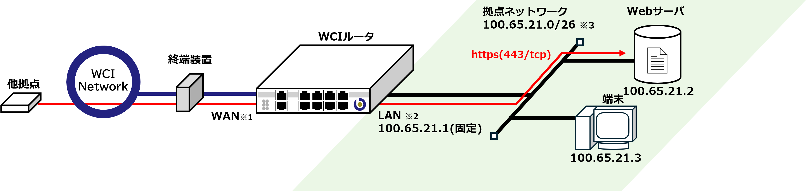
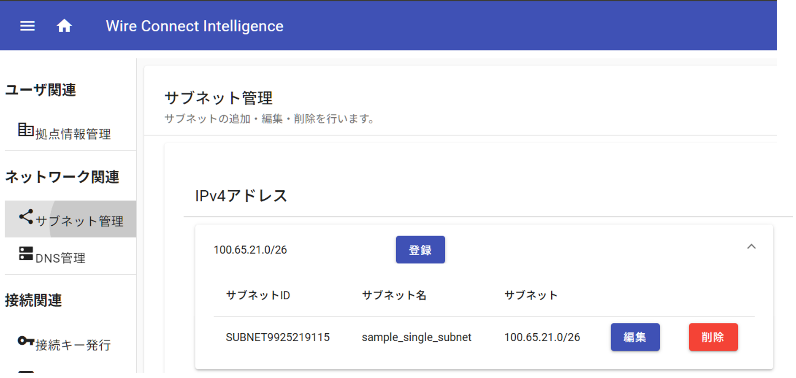
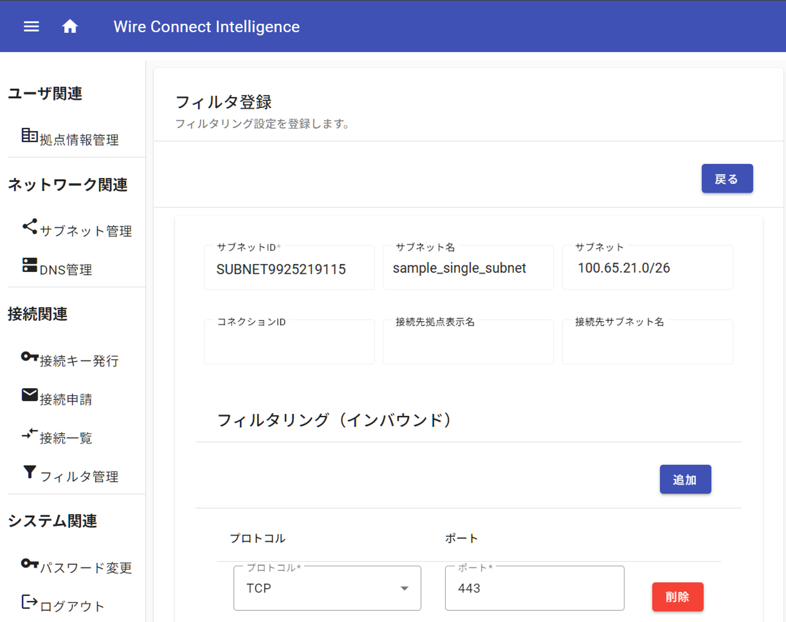

2.1. Webサーバを公開する
本事例は、拠点ネットワークにWCIアドレスを直接的に割り当てる最もシンプルな構成です。
拠点ネットワーク内に、Webサーバ(443/TCP)を設置しWCIネットワーク(IPv4)に公開します。
2.1.1. 接続構成
接続構成図
{kind=link}

注意
※1,2 導入機種により接続ポートが異なります。詳しくは" 1.1. WCIルータについて "の導入機種に応じたポート対応表をご確認下さい。
※3 ご契約拠点により、WCIアドレスおよびサブネットの割当範囲が異なります。別途ご確認下さい。本事例ではWCIアドレス割当範囲を
100.65.21.0/26、WCIルータのLANポートアドレスを 100.65.21.1 として記載します。2.1.2. WCI-Portalの設定
Tip
WCI-Portalの詳細な操作方法については別紙 WCI-Portal 利用手順書 をご確認ください。
端末 から WCI-Portal (https://portal.bbwci.net)にアクセスしログインします。
サブネット管理
以下の様に設定します。
{kind=link}

|
|
|
sample_single_subnet |
|
26 |
|
100.65.21.0 |
サブネット名 は任意の名称を設定できます。
このサブネットが拠点ネットワークのアドレス帯となります。
接続
以下の様に設定します。

接続で指定するサブネットは サブネットの登録 で作成した
sample_single_subnet を指定してください。フィルタ管理
以下の様に設定します。
{kind=link}

|
|
|
TCP |
|
443 |
接続を許可した他拠点から”100.65.21.2:443”でWebサーバにアクセスする事が可能となりました。
(ドメイン名,DNSレコードの追加・編集については、別紙 WCI-Portal 利用手順書 をご確認下さい。)
また、拠点ネットワーク内の端末からWCI-Portalや他接続拠点で公開されているサービスへのアクセスが可能となります。
注意
本事例の場合、接続構成図の 端末 を含め拠点ネットワーク内の全てのデバイスに対する
443/TCP も許可する設定となります。よりセキュアで柔軟な設定を行う場合は " 2.2. Webサーバを公開する(NAT,NAPT) "の構成を推奨いたします。
Tip
本事例では
443/TCP を許可する設定ですが許可するプロトコル・ポートを変更することで任意のサービスを公開することが可能です。